1.5.2.3.2 FluentD로 OKE 로그 전송하기
EFK 구성에서 ElasticSearch와 Kibana 대신 OpenSearch와 OpenSearch Dashboard를 사용할 수 있도록 FluentD를 설정합니다.
Fluentd 구성
-
Fluentd 설치를 위한 Service Account를 생성하고 관련 권한을 정의합니다.
-
configmap 추가 설정정의
- Fluentd 관련 설정은 컨테이너 내에 /fluentd/etc/ 하위에 .conf 파일로 모두 정의 되어 있습니다. 이 파일들을 재정의 할 수 있습니다.
- OCI OpenSearch 연결을 위해 꼭 필요한 항목만 남겨두고 나머지는 주석 처리하였습니다.
-
fluentd daemonset 정의
- 설정한 configmap 사용을 위해 Fluentd 문서상의 YAML을 일부 변경하셨습니다.
- configmap으로 재정의한 fluent.conf을 사용하도록 변경하고 있습니다.
FluentD 설치
-
fluentd-daemonset-opensearch.yaml에서 FLUENT_OPENSEARCH_HOST를 대상 OpenSearch 호스트로 변경합니다.
... env: - name: FLUENT_OPENSEARCH_HOST value: "amaaaaaavsea7yiatk7bvqasj524dqnutj3itigg3tyviql4zppawdjdfspa.opensearch.ap-chuncheon-1.oci.oraclecloud.com" - name: FLUENT_OPENSEARCH_PORT value: "9200" ... -
또한 OpenSearch API에 사용할 사용자 인증 정보를 입력합니다. 클러스터 생성시 입력한 Primary Account의 유저, 패스워드를 입력합니다.
... env: ... - name: FLUENT_OPENSEARCH_USER value: "username" - name: FLUENT_OPENSEARCH_PASSWORD value: "changeme" ... -
FluentD 설치
kubectl apply -f fluentd-rbac.yaml kubectl apply -f fluentd-configmap-opensearch.yaml kubectl apply -f fluentd-daemonset-opensearch.yaml -
OKE 클러스터 Worker Node에서 OpenSearch로 로그를 보낼수 있도록 보안규칙을 추가합니다.
-
Worker Node의 보안규칙
-
대상: 예) oke-nodeseclist-quick-oke-cluster-1-04cdcc334
-
Egress Rules:
아래 예시는 OpenSearch 위치가 서브넷인 10.0.20.0/24인 경우
Stateless Destination IP Protocol Source Port Range Destination Port Range Description No 10.0.20.0/24 TCP All 9200 OpenSearch API
-
-
OpenSearch의 보안규칙
-
대상: OpenSearch가 속한 서브넷의 Security List
-
Ingress Rules:
아래 예시는 Worker Node가 위치가 서브넷인 10.0.10.0/24인 경우
Stateless Source IP Protocol Source Port Range Destination Port Range Description No 10.0.10.0/24 TCP All 9200 OpenSearch API
-
-
-
로그 확인
fluentd Pod가 기동하면, 로그를 통해 OpenSearch와 연결 오류 없이 정상 동작하는 지 확인합니다.
$ kubectl get pod -n kube-system NAME READY STATUS RESTARTS AGE ... fluentd-gls8b 1/1 Running 0 2m15s fluentd-jhpxj 1/1 Running 0 87s fluentd-l9mbn 1/1 Running 0 45s ... $ kubectl logs -n kube-system -f fluentd-gls8b ... 2023-04-21 15:00:05 +0000 [info]: parsing config file is succeeded path="/fluentd/etc/fluent.conf" ... 2023-04-21 15:00:07 +0000 [info]: adding match pattern="**" type="opensearch" ... 2023-04-21 15:00:07 +0000 [info]: #0 starting fluentd worker pid=14 ppid=6 worker=0 2023-04-21 15:00:07 +0000 [info]: #0 [in_tail_container_logs] following tail of /var/log/containers/coredns-f7c884d6f-9kxr5_kube-system_coredns-79f0a4c0099003d963547e7e3f54d78265c84dbe85f26d1adf52ff3dca931c6a.log ...
OpenSearch Dashboard 설정
-
앞서 사용한 방법을 통해 다시 브라우저로 OpenSearch Dashboard에 접속을 확인합니다.
-
왼쪽 상단 내비게이션 메뉴에서 OpenSearch Dashboards > Discover 를 클릭합니다.
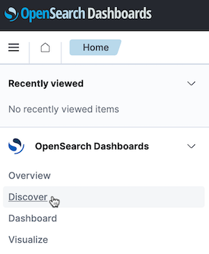
-
Create index pattern을 클릭합니다.
-
인덱스 패턴을 생성합니다.
아래쪽에 보이는 소스 중에서 fluentd 소스를 사용합니다.
- Index pattern name: fluentd*
- Time field: time
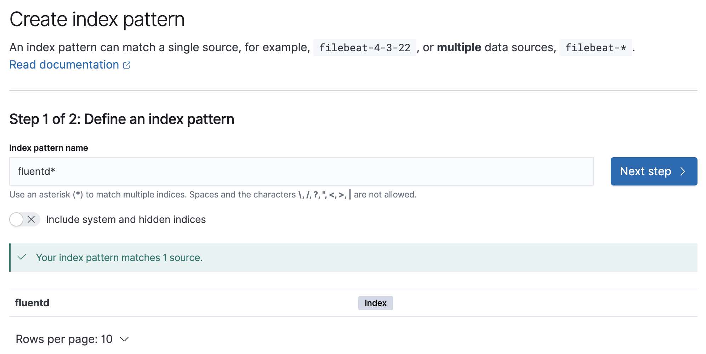
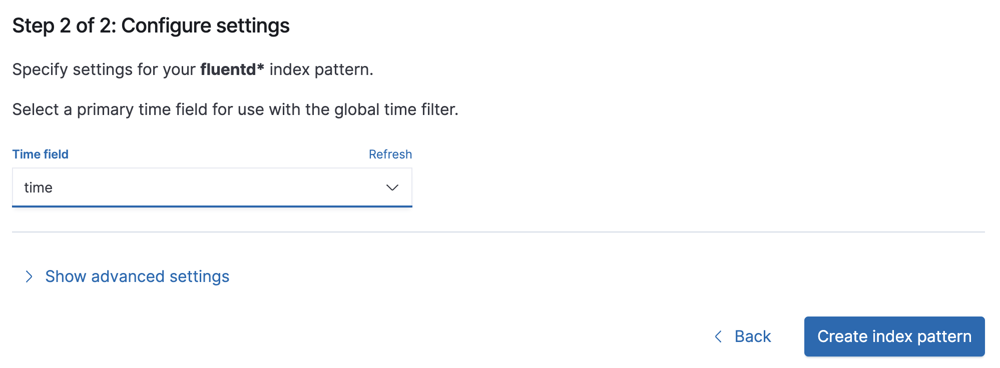
-
인덱스 패턴이 추가된 결과를 볼 수 있습니다.
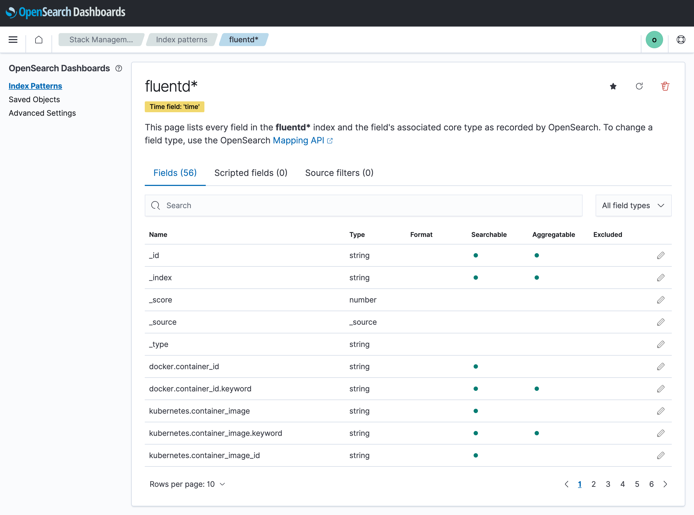
-
왼쪽 상단 내비게이션 메뉴에서 OpenSearch Dashboards > Discover 를 클릭합니다.
-
생성한 인덱스 패턴을 통해 수집된 로그를 확인할 수 있습니다.
- 테스트 앱의 로그를 확인하기 위해 Add filter를 클릭하여 namespace_name=default 로 지정합니다.
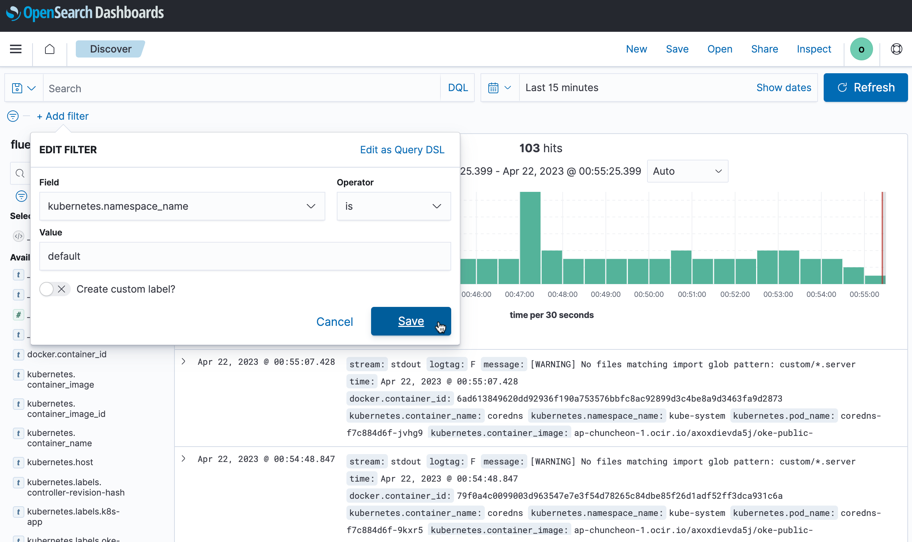
-
테스트 앱을 접속합니다.
-
로그 확인
아래와 같이 OpenSearch Dashboard에서 테스트 앱의 로그를 확인할 수 있습니다.
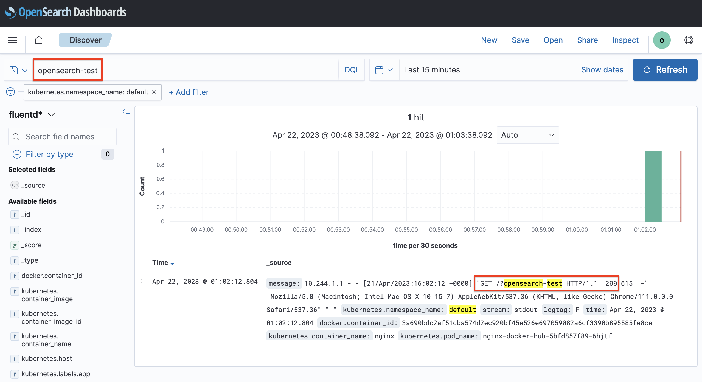
Fluentd에서 사용할 OpenSearch 유저 만들기
OpenSearch Internal 유저 만들기
-
OpenSearch Dashboard에 Primary Account로 로그인합니다.
-
왼쪽 상단 내비게이션 메뉴에서 OpenSearch Dashboards > Security 를 클릭합니다.
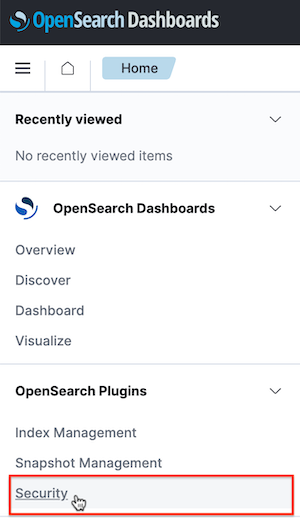
-
Internal Users > Create internal user를 클릭합니다.
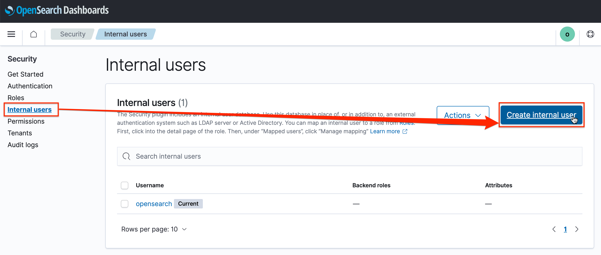
-
생성할 유저명과 패스워드를 입력하고, 아래의 Create를 클릭하여 유저를 생성합니다.
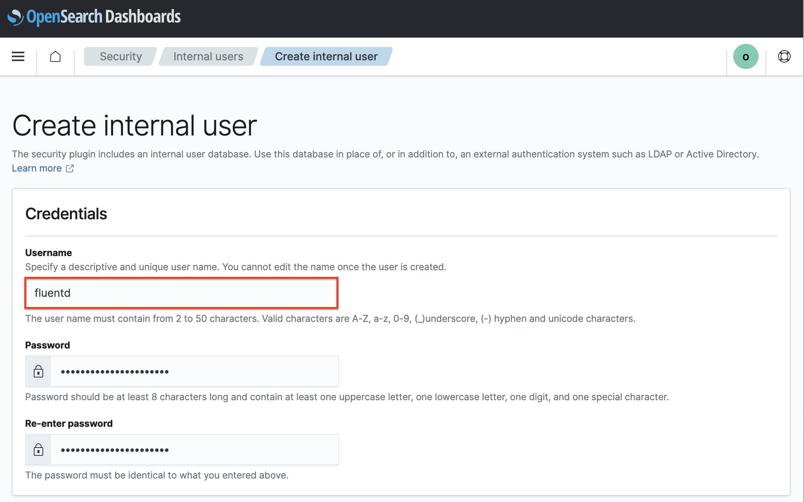
OpenSearch Role 만들기
-
메뉴에서 Roles을 선택합니다.
-
기본 설치된 Role이 보입니다. fluentd는 logstash와 동일한 권한이 필요하므로, 기본 생성된 logstash Role의 복사본을 만들어 인덱스 패턴만 변경하도록 하겠습니다.
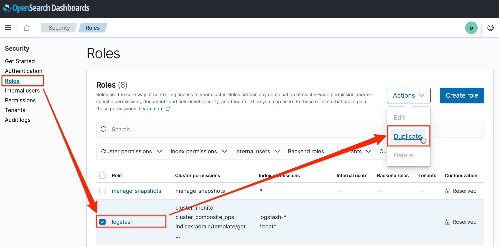
-
Name: 이름을 fluentd로 변경합니다.
-
Cluster permissions: 변경없이 그대로 사용합니다.
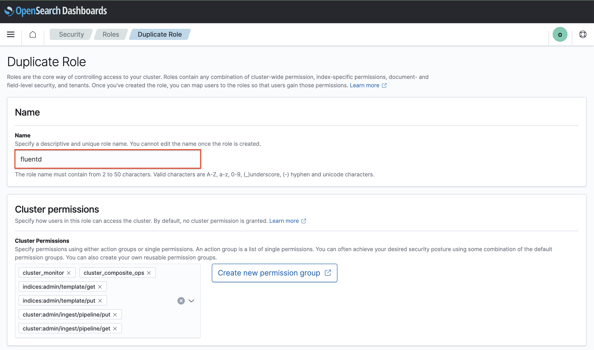
-
Index permissions: Index에서 기존 패턴(logstatsh*)을 삭제하고, fluentd daemon에서 생성하는 인덱스 패턴을 입력합니다. fluentd*로 입력합니다. Index permission은 변경없이 그대로 사용합니다.
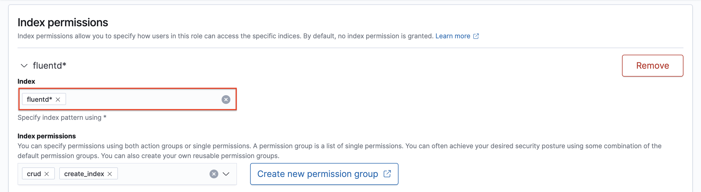
-
Index permissions에서 두번째로 있는 *beat*는 삭제합니다.
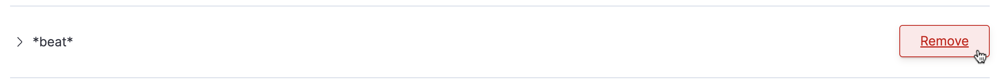
-
하단 Create를 클릭하여, 설정한 Role을 생성합니다.
-
-
생성한 fluentd Role에 유저를 매핑하기 위해 Mapped users 탭을 클릭하고, Manage mapping을 클릭합니다.
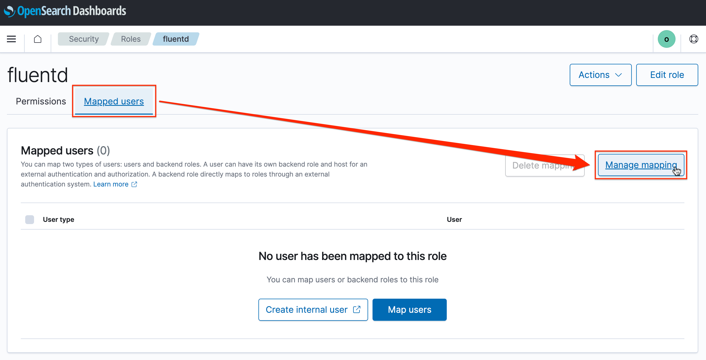
-
앞서 생성한 fluentd 유저를 선택하고 매핑합니다.
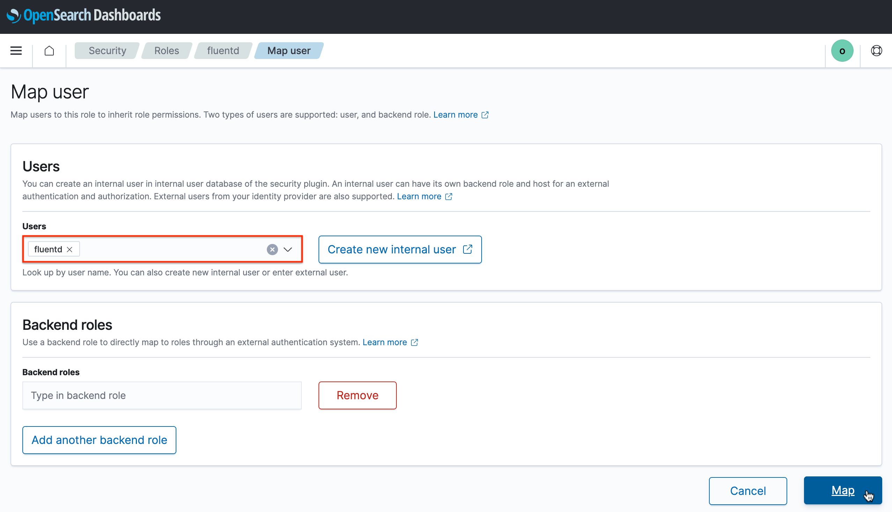
-
fluentd를 위한 유저 및 권한을 위한 Custom Role이 생성 완료되었습니다.
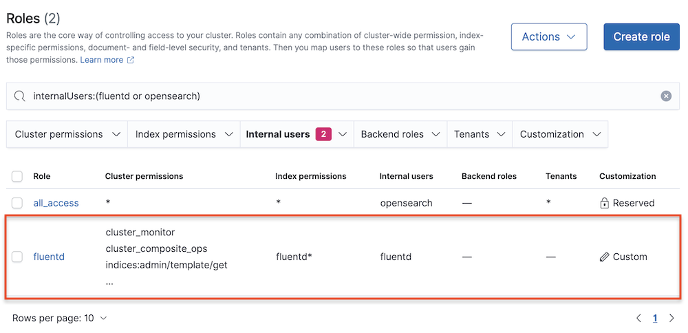
FluentD 재배포 하기
-
앞서 OKE 클러스터에 배포한 fluentd-daemonset-opensearch.yaml에서 사용자 인증 정보를 새로 만든 유저정보로 변경합니다.
... env: ... - name: FLUENT_OPENSEARCH_USER value: "fluentd" - name: FLUENT_OPENSEARCH_PASSWORD value: "changeme" ... -
FluentD 재배포
kubectl apply -f fluentd-daemonset-opensearch.yaml -
로그 확인
fluentd Pod 재기동이 완료되면, 로그를 통해 OpenSearch와 연결 오류 없이 정상 동작하는 지 확인합니다.
$ kubectl apply -f fluentd-daemonset-opensearch.yaml daemonset.apps/fluentd configured $ kubectl get pod -n kube-system NAME READY STATUS RESTARTS AGE ... fluentd-dl74t 1/1 Running 0 22s fluentd-gc6gk 1/1 Running 0 27s fluentd-v8nfj 1/1 Running 0 32s ... $ kubectl logs -n kube-system -f fluentd-dl74t ... 2023-04-22 14:05:57 +0000 [info]: parsing config file is succeeded path="/fluentd/etc/fluent.conf" ... 2023-04-22 14:05:59 +0000 [info]: adding match pattern="**" type="opensearch" ... 2023-04-22 14:05:59 +0000 [info]: #0 starting fluentd worker pid=14 ppid=6 worker=0 2023-04-22 14:05:59 +0000 [info]: #0 [in_tail_container_logs] following tail of /var/log/containers/coredns-f7c884d6f-xdgnw_kube-system_coredns-3195b55827bcaa7cd928bdf90d486ca7de4d5dd467ff63270dcaf132378d2758.log ...
이 글은 개인으로서, 개인의 시간을 할애하여 작성된 글입니다. 글의 내용에 오류가 있을 수 있으며, 글 속의 의견은 개인적인 의견입니다.